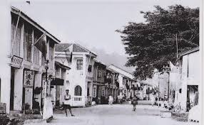
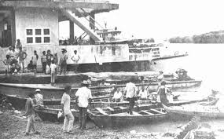

History of Perlis
1️⃣ Origin of Perlis
- Perlis has been inhabited since the Prehistoric and Stone Ages.
- Evidence: ancient human relics found in Gua Tegun Lembu (Beseri), Gua Kurung Batang (Bintong) and a stone axe from Gua Gergasi Bukit Besi Hangit (now preserved in the National Museum).
- The name “Perlis” has several versions: Pokok Perlis, Tanah Peroleh, Prow-Loi (Siam), Perlus, Peran Leh, Perlit or Tok Perlis.
2️⃣ Relationship with Kedah
- Perlis was formerly part of the Kingdom of Kedah.
- The Sultan of Kedah built a palace in Kayang (now known as Al Marhum Kayang).
- The Arau area was granted to Syed Harun Jamalullail (the Sultan’s son-in-law) in 1798, making him the local chief.
3️⃣ Establishment of the Perlis Sultanate
- Syed Harun Jamalullail became the founder of the Perlis Sultanate.
- Perlis began to be governed independently from Kedah following this land grant.
- The sultanate continues to exist today with the Sultan as the head of the state.
Timeline of Perlis History
| Year / Period | Important Events |
|---|---|
| Prehistoric & Stone Age | Perlis was inhabited, ancient human relics discovered in Gua Tegun Lembu (Beseri), Gua Kurung Batang (Bintong) and a stone axe from Gua Gergasi Bukit Besi Hangit (now in the National Museum). |
| 15th – 16th Century | Siamese traders frequently visited Kuala Perlis calling it “Prow-Loi” due to floating coconuts along the coast. |
| 1798 | Perlis Sultanate established under Syed Harun Jamalullail - Perlis governed separately from Kedah. |
| Early 19th Century | The sultanate continues with the Sultan of Perlis as the head of the state. |
| Present Day | The sultanate continues to exist under the current Sultan of Perlis. |
Historical images of Perlis

Kangar Town in the 1990s

Kuala Perlis in the olden days

Arau Royal Palace in the past

Floods occurred in the past